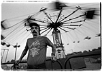

1
John Labovitz's e-zine list
http://www.meer.net/~johnl/e-zine-list/index.html
If you've never visited this amazing resource for 'zines, it's about time you did. Arguably the most thorough resource for e-zines, from America's 4x4 Magazine to Zongo, this list offers access through an alphabetical directory. Labovitz, who offers this service free for the benefit of both the e-zines and interested netizens, started the list in 1993 when he found no site on which to publicize his own print 'zine, Crash. In addition to the list, the site's author also offers a set of links useful to other would-be e-zine publishers. (For more on the site's nomadic creator, see Spotlight, page 57)
Fortean Times
http://alpha.mic.dundee.ac.uk/ft/ft.cgi?-1,ft
Most likely, unsuspecting browsers happen upon this site expecting to find the famed director. However, there is so much content here, the legend o' film is quickly forgotten. Altman, a former photojournalist for Rolling Stone, packs his site with awesome footage of Timothy Leary, Iggy Pop, Mick Jagger, Abbie Hoffman and many other popular and subversive figures from the past four decades. Beyond the photos, there's much more to discover in this pleasure chest.
Literary Kicks
http://www.charm.net/~brooklyn/LitKicks.html
An impressive homage to the free-spirited folk who symbolized the Beat Generation. Created by Levi Asher, this massive collection of essays, articles, lists, facts and resources about the likes of Jack Kerouac, Allen Ginsberg and William Burroughs brought out our admiration and desire for the idealistic wanderlust they represented. Well-written, thoroughly researched and inarguably fanatical, a reader could get lost in this site for hours and proabably should.
The Land of the Lunchboxes
http://www2.ari.net/home/kholcomb/lunch.html
Forget blue-chip stocks and mutual funds. If you want to make some cash, try buying and selling lunchboxes. This site not only illustrates the history of lunchboxes with graphics and text, it offers the opportunity to search the "trading post" section for boxes to buy or sell. We were amazed to discover that several of the boxes are worth more than the cars we drive. Detailed explanations of the different genres of boxes (metal, vinyl, etc.) are offered along with tons of GIFS and a full price guide. Highlights include the Scooby Doo and Brady Bunch boxes.
Tales From the Crypt
http://www.cryptnet.com/
"One of the most hackciting sites on the Web." This site, based on and developed by the creators of the comic and television show of the same name, is an intense, graphical excursion to the bowels of sci-fi and horror. The RealAudio sound tour is narrated by the Cryptkeeper who, in a cool Java application, is surrounded by eerily flickering candles. An archive of past episodes can be found in the "vault," with story synopses, details on the show's stars and classic comic images that correspond to each show. Crypt memorabilia is also available via the Cryptique and the "HBO cryptCam takes you behind the creaky gates and rotted doors of Ealing Studios in London" to view live tapings.
The Photojournalist's Coffeehouse
http://www.intac.com/~jdeck/index3.html
 Filled with edgy, touching portraits of people living on the fringes of society, The Photojournalist's Coffeehouse is a thought-provoking site dedicated to chronicling daily life through stark photos and simple phrases. Newspaper staffer John Decker, a graphic designer with The Record of Bergen County, N.J., spent 10 months living with the homeless to create his photo-essay, "Covington's Homeless," which can be found here. The site also features many more compelling diaries of the lives of clowns, carnies, teenagers and soldiers with photographs by Decker and others.
The Biggest List Of Humor Sites On The Web
http://www.cs.bgu.ac.il/~omri/humor-sites.html
Just about everything that presumes to be funny on the Internet, from the "Ask Mr. Bad News" page to the "Ze Sveedish chef, Bork, Bork, Bork" site, resides on The Biggest List of Humor Sites on the Web. The next step for this comprehensive comedy trove is a rating system that separates out the wheat from the chaff so that unwary visitors can avoid such pitfalls as "The Sex Life of an Electron" at http://www.netins.net/showcase/mpeabody/electron.htm.
The Real Beer Page
http://realbeer.com/rbp/
As if beer by itself wasn't enough fun, this site supplements the liquid staple with an impressive collection of facts, reference works and helpful pointers. At this one site, you can sign up for the beer mailing list, find local brewery tours, learn how beer is made, find e-zines about beer and enter the somewhat alarming burping contest (see this month's Weird on the Web). If just slamming a brewski isn't enough for you, then check out the site's shockingly thorough list of beer drinking games, replete with drinking-game etiquette. Among the links you'll find one to an array of rugby songs. Why rugby? Who else drinks more beer?
Kapow
http://www.kapow.com
Private detective Mace Broade stars in this ongoing detective-fiction series updated every Monday and Friday on the Web. Writers and producers Neal Steinberg and Ethan Goldstine have done a remarkable job designing, writing and creating intriguing content that captures your attention and actually finds you looking forward to the next episode. A mixture of illustrations, photographs and sound bites make the experience multimedia. We won't give the story away here, so search through the past episode file to catch up.
Supermarketing
http://www.steveconley.com/supermarketing.htm
If you think online hucksters make some incredulous claims (see page 26), check out this site cataloging more than 30 ads culled from comic books of the '60s and '70s. As any adolescent reader of Spider-Man or Richie Rich can attest, these marketing masterpieces had legions of kids believing that X-ray specs would let you actually see the bones in your hand, Charles Atlas could transform you from a 98-lb. weakling into "the hero of the beach" or that selling Grit was the road to financial independence.